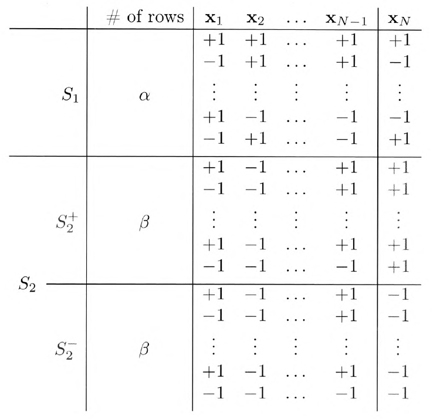
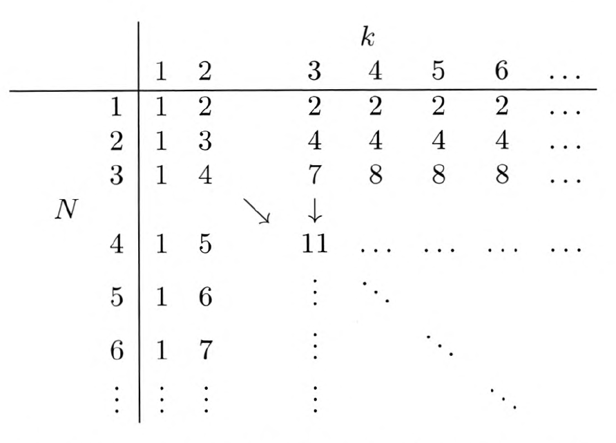
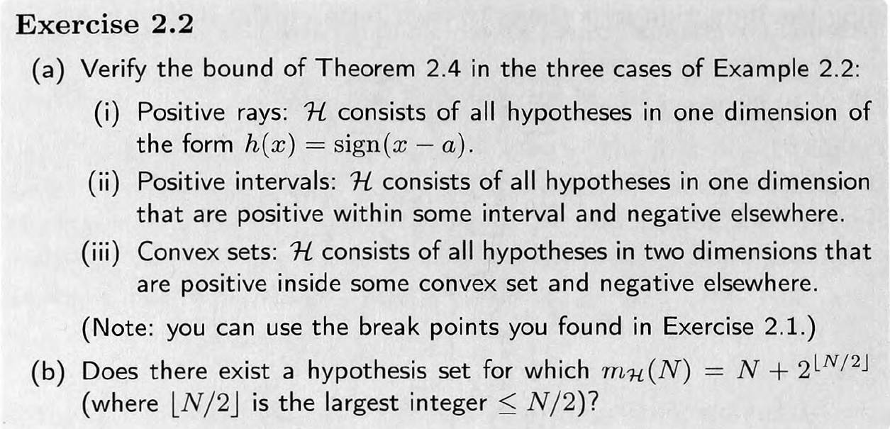
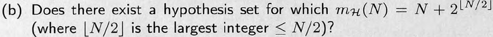
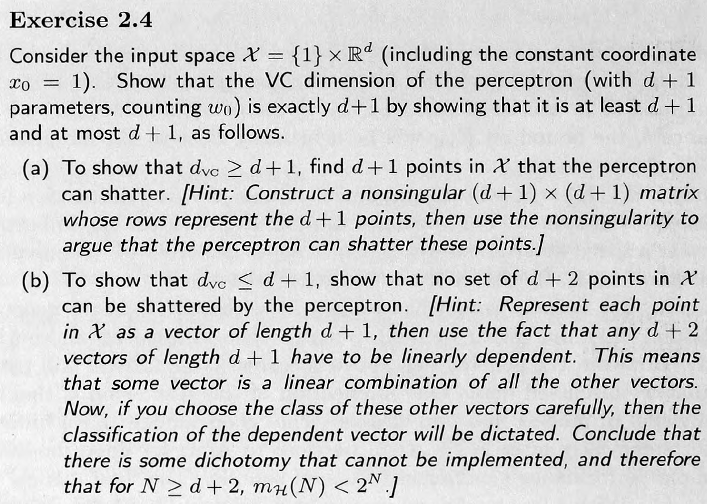
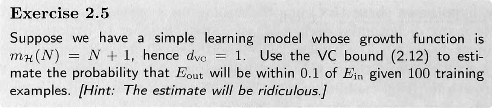

layout: true <div class="my-header"> <p class="align_left"><img src="images/yonsei_logo.png" style="height: 30px;"/></p> <p class="align_right"><b>LFD Chapter 2 - Part 2</b></p> </div> <div class="my-footer"> <p class="align_right"><b>2022.02.19 @ SYTEARK</b></p> <p class="align_left"><b>Tae Geun Kim</b></p> </div> --- class: center, middle # Generalization Bound <h4 style="color:brown">LFD Chapter 2 - Part 2</h4> <h3 style="color: darkblue">Tae Geun Kim</h3> --- ## Table of Contents * Bounding the Growth function -- * The VC Dimension -- * The VC Generalization Bound -- * The Slack in the VC Bound -- * Sample Complexity -- * Penalty for Model Complexity --- class: center, middle # Bounding the Growth function --- ### Bounding the Growth function .center[ <div class="animated-border-quote" style="width:100%"> <blockquote style="width:90%"> <p style="text-align:left"> The most important fact about growth function is that if the condition $\small m_\mathcal{H}(N) = 2^N$ breaks at any point, we can bound $\small m_\mathcal{H}(N)$ for all values of $N$ by a simple polynomial based on this break point. </p> </blockquote> </div> ] -- * If $M$ can be replaced by $m\_\mathcal{H}(N)$, and $m\_\mathcal{H}(N)$ can be bounded by polynomial, $$ \sqrt{\frac{1}{2N}\ln \frac{2m\_\mathcal{H}(N)}{\delta}} \rightarrow 0 ~\text{ as }~N\rightarrow \infty $$ -- .center[ ] --- ### Bounding the Growth function .center[ <div class="animated-border-quote" style="width:100%"> <blockquote style="width:90%"> <p><b>Definition 2.4</b></p> <p style="text-align:left"> $B(N,k)$ is the maximum number of dichotomies on $N$ points such that no subset of size $k$ of $N$ points can be shattered by these dichotomies. </p> </blockquote> </div> ] -- * $B(N,k)$ assumes a break point $k$ -- * Since $B(N,k)$ is defined as a maximum, it will serve as an upper bound for any $m\_\mathcal{H}(N)$ that has a break point $k$; $$ m\_\mathcal{H}(N) \leq B(N,k) \quad \text{if $k$ is a break point for $\mathcal{H}$} $$ -- * $B(N,1) = $ -- $1$ * For $k > 1,~~B(1,k)=$ -- $2$ --- ### Bounding the Growth function **Q. What's the difference of $m\_\mathcal{H}(N)$ and $B(N,k)$?** -- * $m\_\mathcal{H}(N) = \underset{\mathbf{x}\_1,\,\cdots,\,\mathbf{x}\_N}{\max}{|\mathcal{H}(\mathbf{x})|}$ : Depend on $\mathcal{H}$ -- * $B(N,k) = \max \\{\text{\# of Dichotomies s.t $\sim$}\\}$ : Do not depend on $\mathcal{H}$ -- For example, let $k$ be a break point for $\mathcal{H}$. -- * $m\_\mathcal{H}(k) < 2^k$ -- * $B(k,k) = 2^k-1$ -- Thus, in this case, $m\_\mathcal{H}(k) \leq B(k,k)$ --- class: split-50 ### Bounding the $\small B(N,k)$ We now assume $N \geq 2$ and $k \geq 2$ and try to develop a recursion. -- .left-column[ .center[ <div id="boxshadow" style="width:95%;margin:0 auto;">  <figcaption style="text-align:center";><b>Fig.1</b> Separate Dichotomies</figcaption> </div> ] ] -- .right-column[ * We can separate the whole dichotomies as two parts: ] -- .right-column[ * $S\_1$ : Some dichotomies on $\small N-1$ points appear only once. ] -- .right-column[ * $S\_2$ : Some dichotomies on $\small N-1$ points appear twice. ] -- .right-column[ * Let $|S\_1| = \alpha,~|S\_2^+| = |S\_2^-|=\beta$, $$B(N,k) = \alpha + 2\beta$$ ] --- ### Bounding the $\small B(N,k)$ * The total number of different dichotomies on the first $\small N-1$ points is $\alpha + \beta$ -- * Since no subset of $k$ of these first $\small N-1$ points can be shattered, $$ \alpha + \beta \leq B(N-1,\,k) $$ -- * Further, no subset of size $\small k-1$ of the first $\small N-1$ points can be shattered by the dichotomies in $S\_2^+$: $$ \beta \leq B(N-1,\,k-1) $$ -- * Substituting these two inequalities into $B(N,k)=\alpha + 2\beta$, we get $$ B(N,k) \leq B(N-1,\,k) + B(N-1,\,k-1) $$ -- * Now, we can recursively compute a bound for $B(N,k)$ --- ### Bounding the $\small B(N,k)$ .center[ <div id="boxshadow" style="width:80%;margin:0 auto;">  <figcaption style="text-align:center";><b>Fig.2</b> Table for bound $B(N,k)$</figcaption> </div> ] --- ### Bounding the $\small B(N,k)$ .center[ <div class="animated-border-quote" style="width:100%"> <blockquote style="width:90%"> <p><b>Lemma 2.3 (Sauer's Lemma)</b></p> <p style="text-align:left"> $$ B(N,k) \leq \sum_{i=0}^{k-1}\begin{pmatrix} N \\ i \end{pmatrix} $$ </p> </blockquote> </div> ] -- More precisely, there is a constraint. -- $$ B(N,k{(\small >N)}) = B(N, N+1) = \sum\_{i=0}^{N}\begin{pmatrix} N \\\\ i \end{pmatrix} = 2^N $$ --- ### Proof of Sauer's Lemma Let's use the mathematical induction. First, we'll try to prove for $N$. -- **1.** For $\small N=1$, $\displaystyle ~B(1,1) = 1 \leq \begin{pmatrix} 1 \\\\ 0 \end{pmatrix} = 1,~~B(1,k) = B(1,2) \leq \sum\_{i=0}^1\begin{pmatrix} 1 \\\\ i \end{pmatrix} = 2$ -- **2.** Let $\small B(M,l)$ satisfies Sauer's lemma. Then for $\small N=M+1$ : -- $$ \small \begin{aligned} B(M+1,l) &\leq B(M,\,l-1) + B(M, l) \\\\ &\leq \sum\_{i=0}^{l-2}\begin{pmatrix} M \\\\ i \end{pmatrix} + \sum\_{i=0}^{l-1}\begin{pmatrix} M \\\\ i \end{pmatrix} \\\\ &=\sum\_{i=1}^{l-1}\left[\begin{pmatrix}M \\\\ i-1\end{pmatrix} + \begin{pmatrix} M \\\\ i \end{pmatrix} \right] + 1\\\\ &= 1 + \sum\_{i=1}^{l-1} \begin{pmatrix} M+1 \\\\ i \end{pmatrix} \\\\ &= \sum\_{i=0}^{l-1}\begin{pmatrix} M+1 \\\\ i \end{pmatrix} \end{aligned} $$ --- ### Proof of Sauer's Lemma Now, we'll try to prove for $k$. -- **1.** For $\small k=1$, $B(N,1) = 1 \leq \begin{pmatrix} N \\\\ 0 \end{pmatrix} = 1$ -- **2.** Let $\small B(M,l)$ satisfies Sauer's lemma. Then for $\small k=l+1$ : -- $$ \small \begin{aligned} B(M,\,l+1) &\leq B(M-1,\,l) + B(M-1,\,l+1) \\\\ &\leq \sum\_{i=0}^{l-1}\begin{pmatrix} M-1 \\\\ i \end{pmatrix} + \sum\_{i=0}^{l}\begin{pmatrix} M \\\\ i \end{pmatrix} \\\\ &=\sum\_{i=1}^{l}\left[\begin{pmatrix}M-1 \\\\ i-1\end{pmatrix} + \begin{pmatrix} M \\\\ i \end{pmatrix} \right] + 1\\\\ &= 1 + \sum\_{i=1}^{l}\begin{pmatrix} M \\\\ i \end{pmatrix} \\\\ &= \sum\_{i=0}^{l}\begin{pmatrix} M \\\\ i \end{pmatrix} \end{aligned} $$ --- ### Bounding the Growth function .center[ <div class="animated-border-quote" style="width:100%"> <blockquote style="width:90%"> <p><b>Theorem 2.4</b></p> <p style="text-align:left"> If $m_\mathcal{H}(k) < 2^k$ for some value $k$, then $$ m_\mathcal{H}(N) \leq \sum_{i=0}^{k-1}\begin{pmatrix} N \\ i \end{pmatrix} $$ for all $N$. The RHS is polynomial in $N$ of degree $k-1$. </p> </blockquote> </div> ] -- The implication of **Thm 2.4** is that if $\mathcal{H}$ has a break point, we have what we want to ensure good generalization; a polynomial bound on $m\_\mathcal{H}(N)$. --- ### Bounding the Growth function .center[  ] --- ### Bounding the Growth function .center[ ] -- Only $k=1$ shattered. Thus, $k\geq 2$ are breakpoints. -- $$ m\_\mathcal{H}(N) = N+1 = \sum\_{i=0}^{1} \begin{pmatrix} N \\\\ i \end{pmatrix} \leq \sum\_{i=0}^{k-1}\begin{pmatrix} N \\\\ i \end{pmatrix}~~\forall k\geq 2 $$ --- ### Bounding the Growth function .center[ ] -- $\mathcal{H}$ can only shattered at $k=1,2$. Thus, $k \geq 3$ are breakpoints. -- $$ m\_\mathcal{H}(N) = \begin{pmatrix} N+1 \\\\ 2 \end{pmatrix} + 1 = \begin{pmatrix} N \\\\ 1 \end{pmatrix} + \begin{pmatrix} N \\\\ 2 \end{pmatrix} + \begin{pmatrix} N \\\\ 0 \end{pmatrix} \leq \sum\_{i=0}^{k-1}\begin{pmatrix} N \\\\ i \end{pmatrix}~~\forall k\geq 3 $$ -- .center[ ] -- $$ m\_\mathcal{H}(N) = 2^N~~\forall N \in \mathbb{N} $$ -- There are no breakpoints, thus we can't apply the theorem. --- ### Bounding the Growth function .center[  ] -- Let's calculate some $m\_\mathcal{H}(N)$ for $N=1,2,3$. -- $$ m\_\mathcal{H}(1) = 2, \, m\_\mathcal{H}(2) = 4,\,m\_\mathcal{H}(3) = 5 < 2^3 $$ -- Since $k=3$ is a breakpoint, by Thm 2.4, $\displaystyle m\_\mathcal{H}(N)\leq \sum\_{i=0}^{2}\begin{pmatrix} N \\\\ i \end{pmatrix}\,\,\forall N$. -- It means, $$ N + 2^{\lfloor \frac{N}{2} \rfloor} \leq \begin{pmatrix} N \\\\ 0 \end{pmatrix} + \begin{pmatrix} N \\\\ 1 \end{pmatrix} + \begin{pmatrix} N \\\\ 2 \end{pmatrix} ~~\forall N $$ -- While LHS is exponential, RHS is polynomial. Thus, it does not hold for large $N$ (e.g. $N=14$ : $128$ vs $91$). -- Therefore, it can't exist. --- class: center, middle # The VC Dimension --- ### The VC Dimension .center[ <div class="animated-border-quote" style="width:100%"> <blockquote style="width:90%"> <p><b>Definition 2.5</b></p> <p style="text-align:left"> The <i>Vapnik-Chervonenkis dimension</i> of a hypothesis set $\mathcal{H}$, denoted by $ d_\text{VC}(\mathcal{H})$ or simply $ d_\text{VC}$, is the largest value of $N$ for which $ m_\mathcal{H}(N)=2^N$. If $m_\mathcal{H}(N)=2^N$ for all $N$, then $d_\text{VC}(\mathcal{H})=\infty$. </p> </blockquote> </div> ] -- * If $d\_\text{VC}$ is the VC dimension of $\mathcal{H}$, then $k=d\_\text{VC}+1$ is a break point for $m\_\mathcal{H}$. --- ### The VC Dimension .center[ ] -- 1. Only $k=1$ shattered $\Rightarrow$ $d\_\text{VC}=1$ -- 2. $k=1,2$ shattered $\Rightarrow$ $d\_\text{VC}=2$ -- 3. $\forall k \in \mathbb{N}$ shattered $\Rightarrow$ $d\_\text{VC}=\infty$ --- ### The VC Dimension Since $k=d\_\text{VC} + 1$ is a break point for $m\_\mathcal{H}$, we can rewrite Thm 2.4 : $$ m\_\mathcal{H}(N) \leq \sum\_{i=0}^{d\_\text{VC}} \begin{pmatrix} N \\\\ i \end{pmatrix} $$ -- Therefore, the VC dimension is the order of the polynomial bound on $m\_\mathcal{H}(N)$. -- Via mathematical induction (Problem 2.5), we can state useful form of this bound. $$ m\_\mathcal{H}(N) \leq N^{d\_\text{VC}} + 1 $$ --- ### Bounding the Growth function From the Hoeffding inequalities, we can take the following bound : $$ E\_{\text{out}}(g) \leq E\_\text{in}(g) + \sqrt{\frac{1}{2N} \ln \frac{2M}{\delta}} $$ -- Replace $M$ with the Growth function then the bound becomes : $$ E\_{\text{out}}(g) \overset{?}{\leq} E\_\text{in}(g) + \sqrt{\frac{1}{2N} \ln \frac{2 m\_\mathcal{H}(N)}{\delta}} $$ -- If $\mathcal{H}$ has a break point, then the bound finally becomes : $$ E\_{\text{out}}(g) \overset{?}{\leq} E\_\text{in}(g) + \sqrt{\frac{1}{2N} \ln \frac{2}{\delta} (N^{d\_\text{VC}} + 1)} $$ --- ### Implication of $d\_\text{VC}$ $$ E\_{\text{out}}(g) \overset{?}{\leq} E\_\text{in}(g) + \sqrt{\frac{1}{2N} \ln \frac{2}{\delta} (N^{d\_\text{VC}} + 1)} $$ -- * For any fixed tolerance $\delta$, the bound on $E\_\text{out}$ will be arbitrarily close to $E\_\text{in}$ for sufficiently large $N$. -- * For any finite value of $d\_\text{VC}$, the error bar will converge to zero at a speed determined by $d\_\text{VC}$, since $d\_\text{VC}$ is the order of the polynomial. -- * We can divide models into two classes: -- * The **good models** have finite $d\_\text{VC}$, and for this model, in-sample performance generalizes to out of sample. -- * The **bad models** have infinite $d\_\text{VC}$, and for this model, in-sample performance is not generalizable to out of sample no matter how large the data set is. --- ### Example: The Perceptron We can compute $d\_\text{VC}$ exactly for the Perceptron model. This is done by two steps. -- 1. Show $d\_\text{VC}$ is at least a certain value. -- 2. Show $d\_\text{VC}$ is at most the same value. -- These are logically different. There are logically different four cases. -- 1. There is a set of $N$ points that can be shattered by $\mathcal{H}$. In this case, $d\_\text{VC} \geq N$. -- 2. Any set of $N$ points can be shattered by $\mathcal{H}$. In this case, we have more than enough information to conclude $d\_\text{VC} \geq N$. -- 3. There is a set of $N$ points that cannot be shattered by $\mathcal{H}$. In this case, we get nothing. -- 4. No set of $N$ points can be shattered by $\mathcal{H}$. In this case, $d\_\text{VC} < N$. --- ### Example: The Perceptron .center[  ] --- ### Example: The Perceptron **(a) To show that $d\_\text{VC} \geq d+1$, find $d+1$ points in $\mathcal{X}$ that the perceptron can shatter.** --- ### Example: The Perceptron **(b) To show that $\small d\_\text{VC} \leq d+1$, show that no set of $\small d+2$ points in $\mathcal{X}$ can be shattered.** --- ### Interpret the Result * The VC dimension of a $\small d$-dimensional perceptron is indeed $d+1$. -- * This is the same value of the number of parameters in the model. -- * One can view the VC dimension as measuring the **effective** number of parameters. -- * The more parameters a model has, the more diverse its hypothesis set is, which is reflected in a larger value of $m\_\mathcal{H}(N)$. -- * In the case of perceptrons, the effective parameters correspond to explicit parameters in the model, namely $w_0,\,\cdots,\,w_d$. -- * The VC dimension measures these effective parameters or *degrees of freedom* that enable the model to express a diverse set of hypotheses. --- class: center, middle # The VC Generalization Bound --- ### The VC Generalization Bound Replace $M$ of Hoeffding bound with the Growth function then: $$ E\_{\text{out}}(g) \overset{?}{\leq} E\_\text{in}(g) + \sqrt{\frac{1}{2N} \ln \frac{2 m\_\mathcal{H}(N)}{\delta}} $$ -- But real bound is little bit different. -- .center[ <div class="animated-border-quote" style="width:100%"> <blockquote style="width:90%"> <p><b>Theorem 2.5 (VC generalization bound)</b></p> <p style="text-align:left"> For any tolerance $\delta >0$, $$ E_\text{out}(g) \leq E_\text{in}(g) + \sqrt{\frac{8}{N} \ln \frac{4 m_\mathcal{H}(2N)}{\delta}} $$ with probability $\geq 1-\delta$ </p> </blockquote> </div> ] --- ### The VC Generalization Bound  -- $$\small m\_\mathcal{H}(N) = N+1 \,\Rightarrow\, E\_\text{out}(g) \leq E\_\text{in}(g) + \sqrt{\frac{8}{N} \ln \frac{4 (2N+1)}{\delta}}$$ -- $$ \small N=100 ~ \Rightarrow ~ \delta = \frac{804}{e^{1/8}} \simeq 709.52751 ~\Rightarrow~ P \geq 1-\delta \simeq -709 $$ -- **Q.** For $\small 1-\delta = 0.9$, what is the minimum sample size $N$ that can be used to achieve the desired tolerance? -- **A.** $N \simeq 10940$. --- ### References * [Learning From Data](http://amlbook.com/), Yaser S. Abu-Mostafa, Malik Magdon-Ismail, and Hsuan-Tien Lin, AMLbook.com (2012) * [A Probabilistic Theory of Pattern Recognition](https://link.springer.com/book/10.1007/978-1-4612-0711-5), Luc Devroye, László Györfi and Gábor Lugosi, Springer (1996) --- class: center, middle # Thank you!